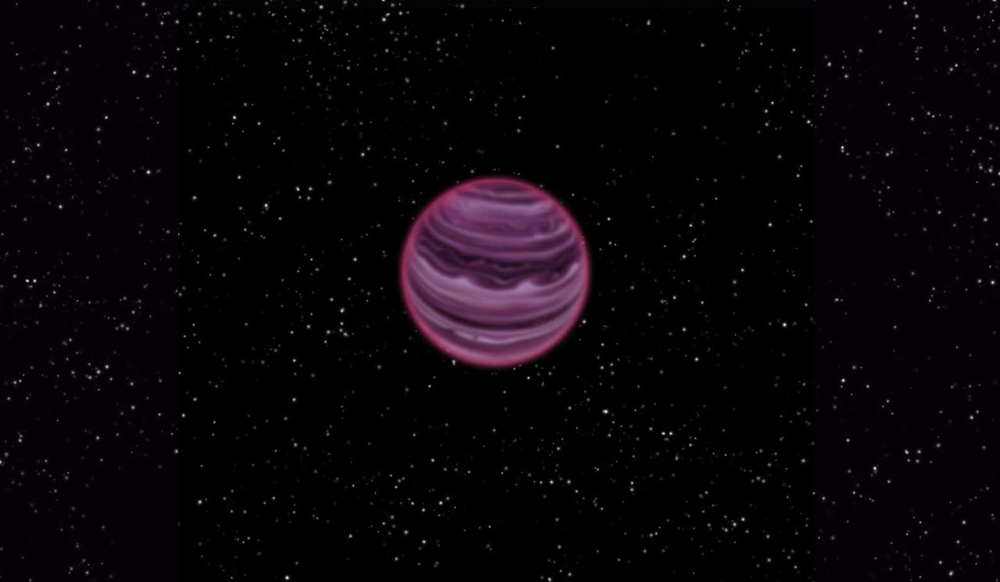

About me
I am a Postdoctoral Research Fellow at the American Museum of Natural History. My research focuses on probing the atmospheres of brown dwarfs, particularly the low-gravity, planetary-mass objects.
Before coming to NYC I completed my PhD at the University of Edinburgh and my B.A. (Mod) in Trinity College Dublin.
You can see a list of my refereed publications via ADS
